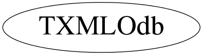

Function Members (Methods)
public:
| TXMLOdb(const TXMLOdb&) | |
| TXMLOdb(char* buffer, int size = 0) | |
| virtual | ~TXMLOdb() |
| static TClass* | Class() |
| TXMLNode* | FindNode(const char* name, TXMLNode* node = 0) |
| TXMLNode* | FindPath(const char* path, TXMLNode* node = 0) |
| const char* | GetNodeName(TXMLNode*) |
| virtual TClass* | IsA() const |
| TXMLOdb& | operator=(const TXMLOdb&) |
| vector<double> | ReadDoubleArray(TXMLNode* node) |
| int | ReadInt(const char* path, int index = 0, int defaultValue = 0xffffffff) |
| vector<int> | ReadIntArray(TXMLNode* node) |
| vector<std::string> | ReadStringArray(TXMLNode* node) |
| virtual void | ShowMembers(TMemberInspector&) |
| virtual void | Streamer(TBuffer&) |
| void | StreamerNVirtual(TBuffer& ClassDef_StreamerNVirtual_b) |
Class Charts
{kind=link}
{kind=link}
{kind=link}
{kind=link}

Function documentation
TXMLOdb(char* buffer, int size = 0)
virtual ~TXMLOdb()
const char * GetNodeName(TXMLNode* )
TXMLNode* FindNode(const char* name, TXMLNode* node = 0)
TXMLNode* FindPath(const char* path, TXMLNode* node = 0)
int ReadInt(const char* path, int index = 0, int defaultValue = 0xffffffff)
std::vector<int> ReadIntArray(TXMLNode* node)
std::vector<double> ReadDoubleArray(TXMLNode* node)
std::vector<std::string> ReadStringArray(TXMLNode* node)